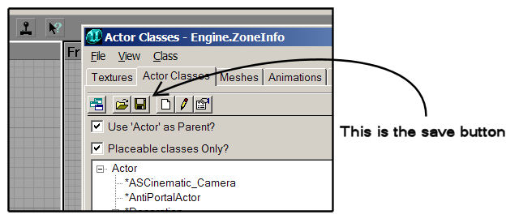

Actors Snap By Default
In order to make actors snap to the grid by default, (I think only a few of them do) so that when you add an actor to your map, it snaps to the grid without you having to go into it's properties and change it every time you add it, you can make actors snap to the grid as soon as you add them, without having to change anything! Whee!
Read more about the Snap To Grid feature.
The procedure to do this is as follows:
Note: this page was written for UnrealEd 3.0 for UT2004. I'm not sure if this procedure is the same for other versions.
1. In the actor browser, RT click the actor you wish to snap to grid by default, and select "Default Properties." 2. When the property page opens, open the "Advanced" tab, and change the property "bEdShouldSnap" to "True". 3. Next, this property change must be saved. If you do not save the property change, the next time you load UnrealED, your change will be lost, of course, and actors you add will not snap to the grid (except one you've already added to your map, they're properties are saved with the map.) 4. Back in the actor browser, click the "save" button in the toolbar at the top of the browser. O.K. You're done. To test this property change, close and re-open UnrealEd, and add the actor whose properties you have modified. If it snaps to the grid, then Success! Otherwise, make sure you have added the actor you changed, or try the above procedure again. |

The button to save the actor's default properties |
Note: this procedure does not make all actors snap to the grid by default, only the one whose properties you edited. It must be repeted for each actor that you want to snap to grid by default.
Related Links
Discussion
Bob_The_Beheader: O.K. people, this is the first page I've made for the Wiki. I hope it's adaquite. One question, however–Why don't actors snap to the grid by default anyways? It seems like a good idea to me, and it's easier for centering stuff like centering a SkyBoxInfo in it's box and other stuff.
Tarquin: whoa... isn't this a case of Do Not Alter Default Packages?
Wormbo: Yes it is. Never modify and save the defaults of actors.
Tarquin: What should we do with this page? Fold some of it into the pages on the grid?
Bob_The_Beheader: Well, I've used this procedure and saved the bEdShouldSnap property for at least several actors, and nothing bad has come of it. I think because the bEdShouldSnap property is not something used by the game, and has no real effect on the inner workings of the actor. I have noticed, however, that the AntiTCC anti cheating mutator looks at me for a suspiciously long time on my favorite UT server. This is probably because of something else, however. 
Evilmrfrank: Just changing the above from editor 2 to editor 3